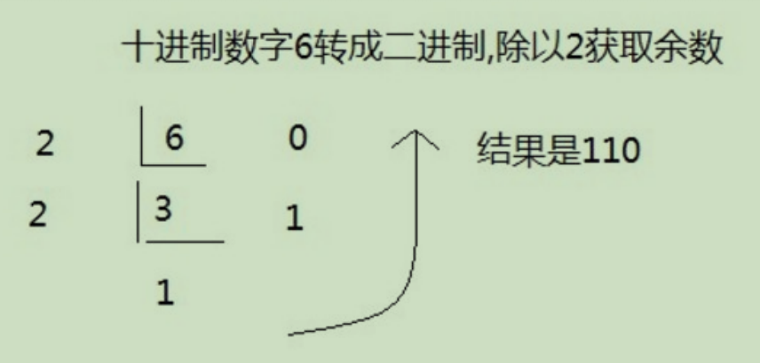
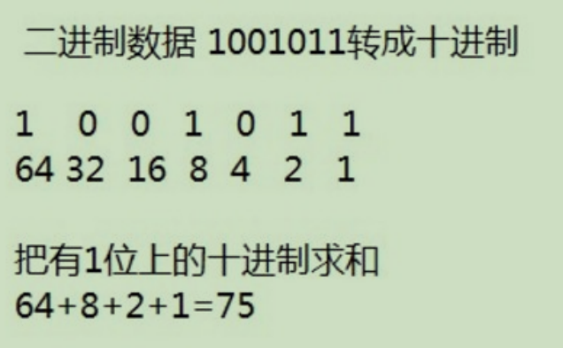
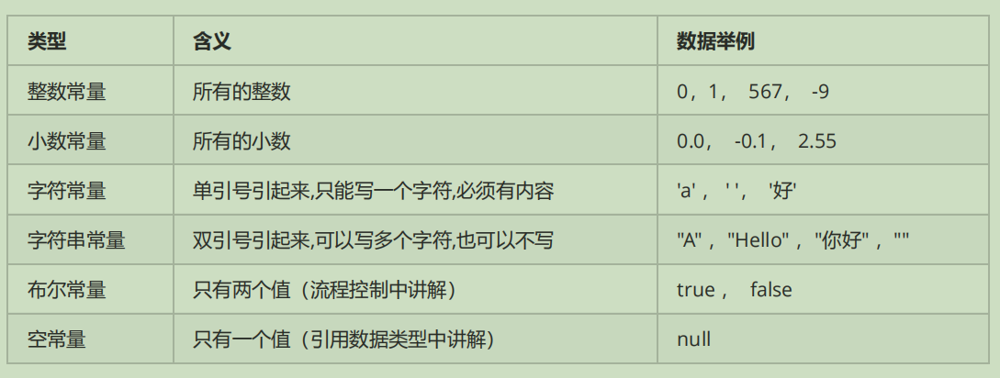
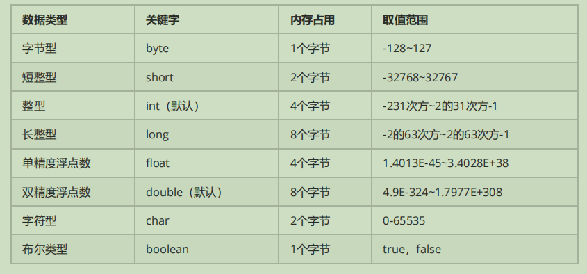

美国的SUN公司开发的静态面向对象的编程语言，后来被甲骨文公司收购，现在也是全球范围内最受欢迎的编程语言。
***
| 进制 | 英文代号 |
|---|---|
| 2进制 | bin |
| 8进制 | oct |
| 10进制 | dec |
| 16进制 | hex |


***
0或者1是位（bit）,Byte是数据最小的存储单位，1Byte=8bit
计算机的存储单位|
:-|
1Byte=1024bit
1kb=1024B
1MB=1024kb
1GB=1024MB
1TB=1024GB
1PB=1024TB
1EB=1024PB
1ZB=1024EB
***
| 操作 | 命令 |
|---|---|
| 切换到D盘 | D: |
| 切换到指定路径 | cd 路径名字 |
| 返回上目录 | cd .. |
| 返回根目录 | cd 打开文件 |
| 清屏 | cls |
// 第一行的第三个单词必须和所在的文件名称完全一样，大小写也要一样
// public class后面代表定义一个类的名称，类是Java当中所有源代码的基本组织单位。
public class HelloWorld {
// 第二行的内容是万年不变的固定写法，代表main方法
// 这一行代表程序执行的起点
public static void main(String[] args) {
// 第三行代表打印输出语句（其实就是屏幕显示）
// 希望显示什么东西，就在小括号当中填写什么内容
System.out.println("Hello, World!!!");
}
}
java中的数据类型可以分为两大类
基本的数据类型：整数，浮点数，字符，布尔
引用的数据类型：字符串，数组，类，接口，lambda

- 如果创建多个变量，那么变量之间的名称不可以重复。
- 对于float和long类型来说，字母后缀F和L不要丢掉。
- 如果使用byte或者short类型的变量，那么右侧的数据值不能超过左侧类型的范围。
- 没有进行赋值的变量，不能直接使用；一定要赋值之后，才能使用。
- 变量使用不能超过作用域的范围。
【作用域】：从定义变量的一行开始，一直到直接所属的大括号结束为止。
- 可以通过一个语句来创建多个变量，但是一般情况不推荐这么写。